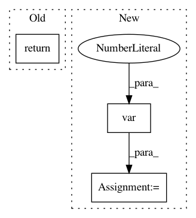

d1d70f4790700927e289a3702b17fbde8f1b8631,scanpy/preprocessing/_utils.py,,_pca_with_sparse,#Any#Any#Any#Any#Any#,21
Before Change
u = u[:, idx]
v = v[idx, :]
u, v = svd_flip(u, v)
return u * s, v
def sparse_mean_variance_axis(mtx: sparse.spmatrix, axis: int):
After Change
v = v[idx, :]
X_pca = (u * s)[:, idx]
ev = X_pca.var(0)
total_var = _get_mean_var(X)[1].sum()
ev_ratio = ev / total_var
output = {
"X_pca": X_pca,
"variance": ev,
"variance_ratio": ev_ratio,
"components": v,
}
return output
def sparse_mean_variance_axis(mtx: sparse.spmatrix, axis: int):
In pattern: SUPERPATTERN
Frequency: 3
Non-data size: 3
Instances
Project Name: theislab/scanpy
Commit Name: d1d70f4790700927e289a3702b17fbde8f1b8631
Time: 2020-04-14
Author: atarashansky@gmail.com
File Name: scanpy/preprocessing/_utils.py
Class Name:
Method Name: _pca_with_sparse
Project Name: pavlin-policar/openTSNE
Commit Name: 561ec05d900a6cf6092c2b15aae069d81717e99a
Time: 2018-09-20
Author: pavlin.g.p@gmail.com
File Name: fastTSNE/tsne.py
Class Name: TSNE
Method Name: generate_initial_coordinates
Project Name: SheffieldML/GPy
Commit Name: 4b1577178c3fe23dfe2a31c2a30223b39fb87921
Time: 2014-05-13
Author: ibinbei@gmail.com
File Name: GPy/util/initialization.py
Class Name:
Method Name: initialize_latent